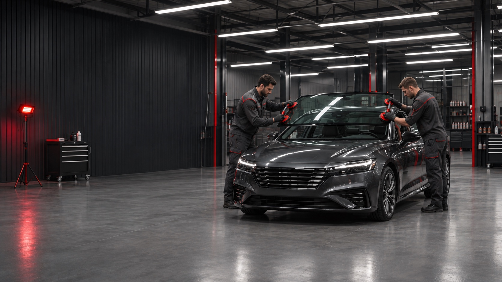
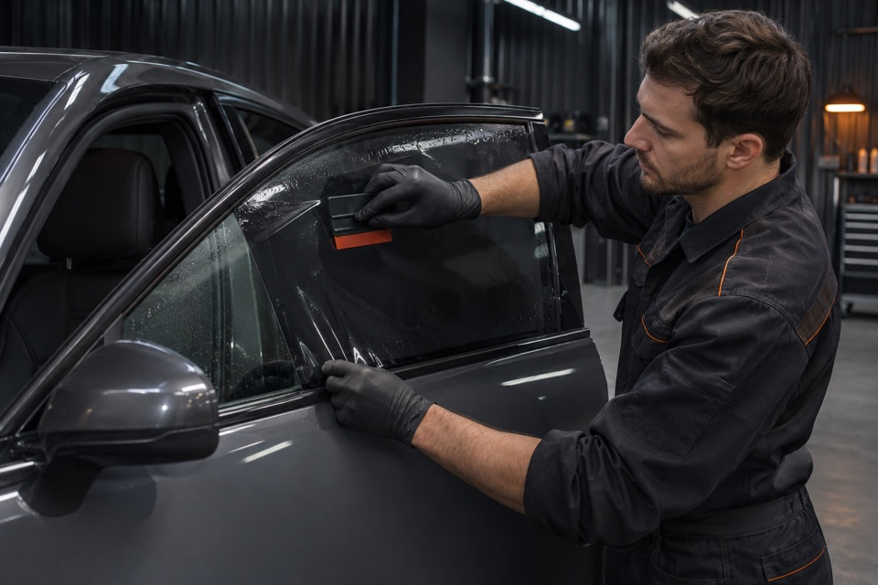
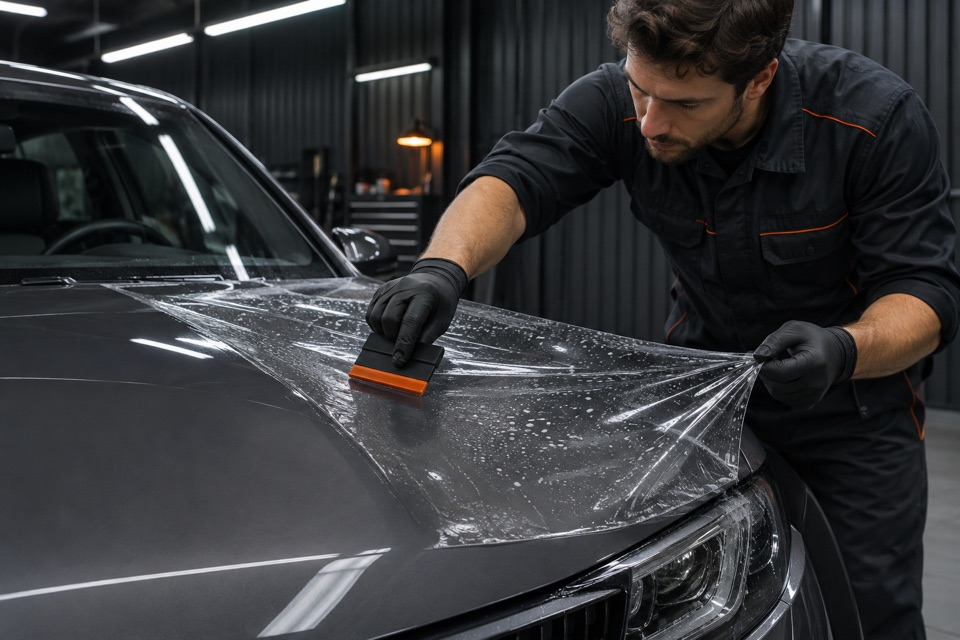
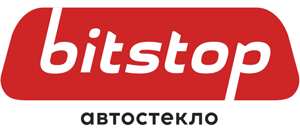

Наши центры в Москве и области

Забота об автомобиле.
Точность в деталях.
От небольшого скола до нового стекла.
Все необходимые услуги — в одном месте.

Чистый обзор.
С любого места.
Лобовые, боковые и задние стёкла. Подбираем по автомобилю и комплектации, аккуратно устанавливаем.

Внимание
к каждой поверхности.
Возвращаем глубину цвета и ухоженный вид. Подбираем уход за кузовом, оптикой и салоном.

Меньше солнца.
Больше комфорта.
Подбираем плёнку для стёкол вашего автомобиля. Согласуем оттенок и зону тонирования, аккуратно наносим покрытие.

Защита кузова.
В каждой детали.
Защищаем уязвимые поверхности автомобиля плёнкой. Подбираем материал и зоны оклейки с учётом ваших задач.
Всё, что нужно вашему автомобилю.
Качество начинается
с самого стекла.
Объясним отличия.
Проверим совместимость.


ПАРТНЁРСКАЯ СЕТЬ

Вместе с Bitstop.
Автостекло.рф — партнёр сети Bitstop. Подбор, замена и ремонт автостёкол в наших сервисных центрах.


Учитываем автомобиль,
год и комплектацию.
01Датчики и камеры+
Проверяем крепления датчиков дождя и света, площадку камеры и другие особенности вашего стекла.
02Обогрев и антенны+
Уточняем, нужен ли полный обогрев, обогрев зоны щёток или встроенная антенна. Сохраняем привычные функции автомобиля.
03Проекция и покрытия+
Учитываем проекционный дисплей, атермальное покрытие и другие особенности комплектации.
04Помощь с выбором+
Не обязательно знать все опции. Сообщите модель и год выпуска — специалист поможет уточнить детали.
Понятно.
На каждом этапе.
Сначала обсуждаем задачу и стоимость.
Затем берёмся за работу.
Уточняем детали
Марка, модель, год и комплектация. Помогаем разобраться с опциями стекла.
Согласуем решение
Производитель, состав работ и стоимость. Выбираем удобный центр и время.
Работаем аккуратно
Устанавливаем стекло и объясняем рекомендации по уходу после замены.

Хорошая работа
начинается
с внимания.
Автостекла для иномарок в Москве, автобусов и строительной техники.
Сеть оптово-розничных складов и установочных центров.
У нас Вы можете приобрести любые виды автостекол, комплектующих, материалов и инструментов для ремонта и замены автостекол любых мировых производителей:
- оригинальные
- оригинальных производителей
- неоригинальные
Наша компания на рынке автомобильных стекол уже больше 18 лет!!!
Колоссальный опыт работы и узкая направленность нашей деятельности, а так же наличие собственных складов с широким ассортиментом автомобильных стекол, комплектующих и материалов позволяет нам предлагать нашим клиентам:
Читать дальшеСвернуть текст
- самые низкие цены на автостекла и комплектующие
- широкий ассортимент от самых дешевых запчастей до оригиналов
- оперативная доставка в любую точку Москвы и области
- качественное и гарантийное выполнение работ по замене и ремонту автостекол
Мы производим замену, ремонт и установку автостекол в Москве и Московской области в наших специализированных, оборудованных самым современным оборудованием сервисных центрах.
Наша компания является официальным представителем большинства заводов-изготовителей автомобильных стекол. Приобретая автостекла у других компаний знайте, что скорее всего оно было куплено именно у нас!!!
Не переплачивайте, обращайтесь именно к нам напрямую, и мы гарантируем Вам экономию и качество!!!
Оригинал или аналог?
Выбираем по делу.
Сравним подходящие варианты по производителю, комплектации и стоимости. Поможем понять, за что вы платите.
Стекло с маркировкой автопроизводителя
Подбирается с учётом модели и конкретной комплектации.
Стекло под маркой завода
Проверяем характеристики, оснащение и совместимость.
Другие производители
Обсуждаем доступные варианты под ваши задачи и бюджет.
За каждой работой —
чьё-то доверие.
Быстро, качественно поставили боковое стекло. Всем рекомендую. Персонал вежливый.
Поставили стекло лобовое на BMW за 40 минут. Есть Wi-Fi, бесплатный чай и кофе.
Широкий ассортимент стёкол, разных производителей на любой вкус, быстрая замена с гарантией.
Делаем больше,
чем просто меняем стекло.
От выбора производителя до рекомендаций
по уходу после установки.
Гарантия 5 лет
На работы по вклейке стекла, с понятными условиями.
Условия гарантии ↗В любой сезон
Оборудованные центры для работы круглый год.
Премиальные стёкла
Специальные предложения на отдельные позиции.
Автовизитка в подарок
Полезная деталь для повседневных поездок.
Купон на скидку
Условия действующих предложений уточнит менеджер.
−10% на шиномонтаж
При заказе автостекла в нашем техцентре. Уточняйте условия.
Сервис, который
развивается.
Начнём
с вашего
автомобиля.
Расскажите, что нужно сделать.
Поможем с выбором и стоимостью.